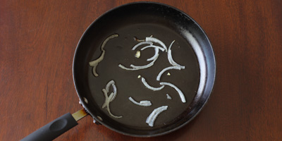
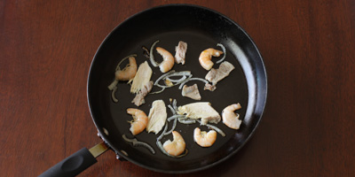
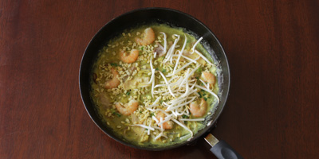

Here is my favorite dish that was passed down from my mom.
This is a simple yet classic dish in Vietnam street food
that is similar to a crepe but it is savory. I hope you enjoy :)
Here is a video of what it looks like being made on the streets of Vietnam
Combine all batter ingredients except scallions in a large bowl for at least 3 hours, or overnight.
Add scallions only right before making the crêpes.
Prepare Fillings
Steam or soak mung beans in water until soft.
Boil pork until cooked through and soft, then slice thinly.
Wash bean sprouts and veggies.
Making Bánh Xèo – Each Crêpe Takes About 8-10 Minutes
On medium-high heat add 1-2 teaspoons of oil and some onions

Immediately add a few pieces of pork and shrimp. Sauté, lightly mixing until very lightly browned and fragrant.

Pour in some batter and quickly tilt & rotate the pan so the batter is evenly spread. Add more batter if it wasn't enough
to cover the pan. There should only be a thin layer of batter that almost flakes off at the pan edges where it's thinner.
If your batter doesn't do that and is too thick, add a few tbsp water to the batter and mix to thin it out.
Lower the heat to medium. Add some mung beans, bean sprouts, and cover with a lid for about 3 minutes, or until bean sprouts
are slightly cooked. The batter should also be slightly cooked and transparent around the edges. This step cooks the top side
of the ingredients and batter while it steams since we won't be flipping the crepe.

Remove the lid, lower heat to medium-low and wait for the crêpe to become crisp. This takes about 5-7 minutes. This step lets the
ingredients fully cook through, including the batter. It also lets steam escape so the batter can crisp up. Brush on a little oil
around the edges if you're not seeing or hearing enough batter to pan contact. Fold in half, transfer to a plate and serve immediately.
For batter troubleshooting please see the troubleshooting section in the post above.